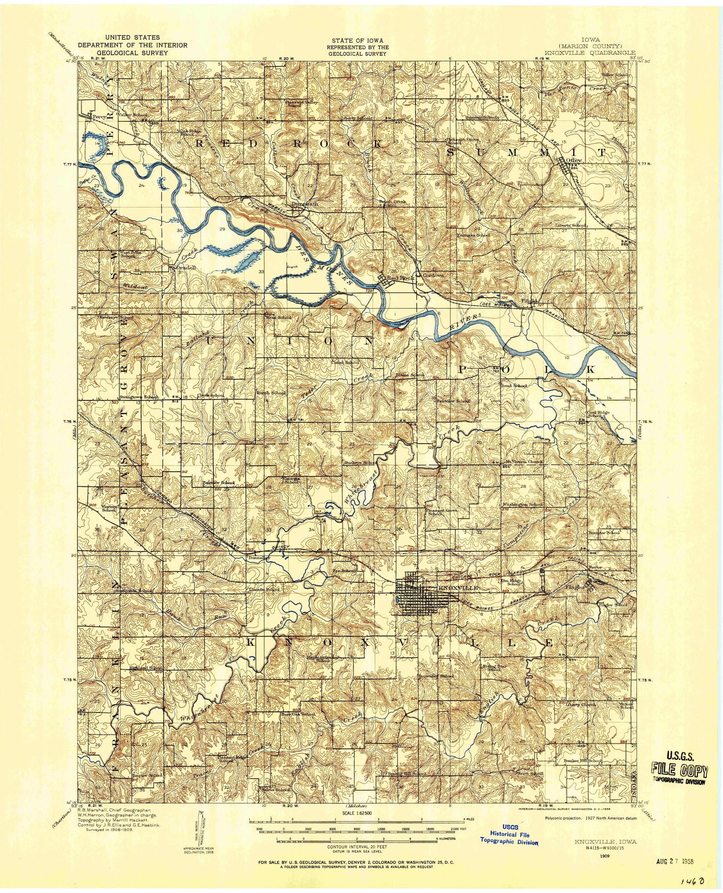

Elevasi
Ketinggian suatu titik terhadap datum vertikal. Pada peta dapat ditampilkan sebagai angka titik tinggi, kontur, atau kelas warna.
Relief menunjukkan variasi tinggi-rendah dan bentuk permukaan bumi. Penyajiannya harus memungkinkan pembaca mengenali elevasi, kemiringan, serta bentuk medan tanpa mengubah makna data.
Capaian pembelajaran mencakup kemampuan untuk:
Ketinggian suatu titik terhadap datum vertikal. Pada peta dapat ditampilkan sebagai angka titik tinggi, kontur, atau kelas warna.
Perbedaan tinggi-rendah dan bentuk permukaan, misalnya dataran, perbukitan, lembah, punggungan, dan gunung.
Perubahan elevasi terhadap jarak mendatar. Kontur rapat menunjukkan perubahan tinggi yang lebih cepat.

| Metode | Informasi utama | Kelebihan | Keterbatasan |
|---|---|---|---|
| Titik tinggi | Elevasi lokasi tertentu | Nilai dapat dibaca langsung | Tidak menunjukkan bentuk medan secara menerus |
| Garis kontur | Elevasi dan bentuk lereng | Dapat digunakan untuk pengukuran dan analisis | Memerlukan latihan membaca pola |
| Warna ketinggian | Kelas elevasi | Pola regional cepat dikenali | Nilai rinci bergantung pada kelas |
| Bayangan relief | Kesan bentuk tiga dimensi | Bentuk medan mudah dipahami | Bukan pengganti nilai elevasi; dipengaruhi arah pencahayaan |

| Jenis | Ciri | Fungsi |
|---|---|---|
| Kontur indeks | Lebih tebal dan biasanya diberi angka elevasi. | Acuan utama untuk menghitung elevasi kontur lain. |
| Kontur antara | Garis lebih tipis di antara dua kontur indeks. | Menunjukkan perubahan relief secara teratur. |
| Kontur tambahan | Dapat berupa garis putus-putus pada setengah interval. | Memperlihatkan relief halus yang tidak terbaca dengan interval utama. |
| Kontur depresi | Memiliki tanda kecil ke arah bagian yang lebih rendah. | Menunjukkan cekungan tertutup. |
Angka elevasi harus mengacu pada datum vertikal yang sama. Datum vertikal merupakan permukaan acuan untuk menyatakan tinggi. Nilai dari datum berbeda tidak boleh langsung digabungkan tanpa transformasi atau penjelasan.
Kontur tertutup dengan nilai yang meningkat ke arah dalam. Titik tertinggi dapat ditandai dengan titik tinggi.
Kontur membentuk huruf V yang bagian lancipnya mengarah ke tempat lebih tinggi atau ke arah hulu.
Kontur membentuk U atau V yang mengarah ke tempat lebih rendah. Air mengalir menjauhi punggungan.
Bagian rendah di antara dua puncak; tampak sebagai dua kelompok kontur tertutup yang menyempit di tengah.
Beda tinggi dan jarak mendatar dinyatakan dalam satuan yang sama. Jarak pada peta dikonversi menggunakan skala.
Kontur memberikan nilai dan bentuk yang dapat diukur, warna ketinggian mempercepat pengenalan zona elevasi, sedangkan hillshade memperkuat kesan bentuk medan. Penggabungan harus menjaga agar satu metode tidak menutupi metode lain.